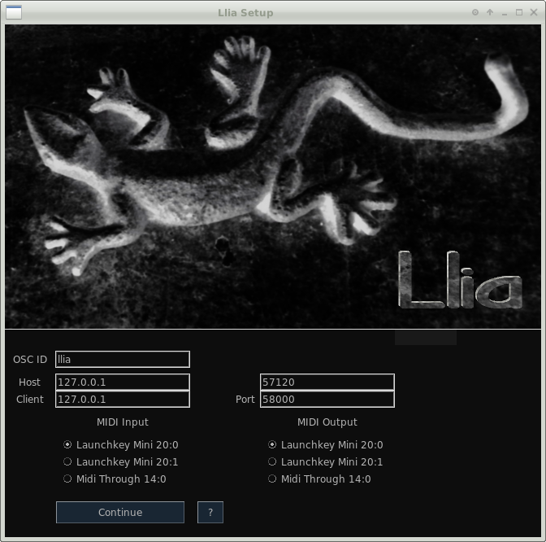
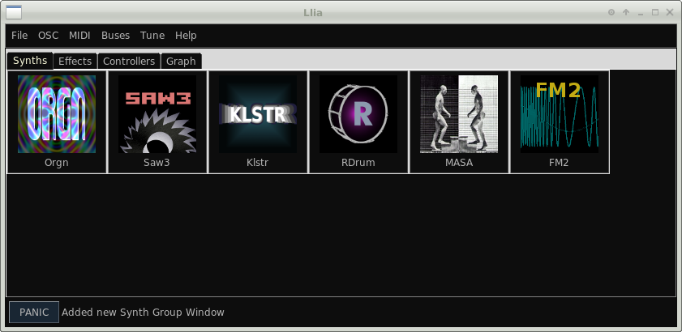
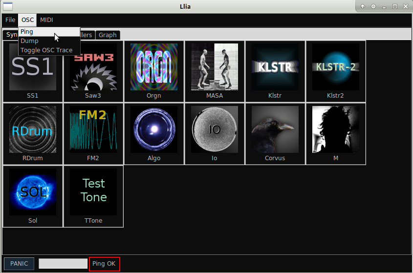
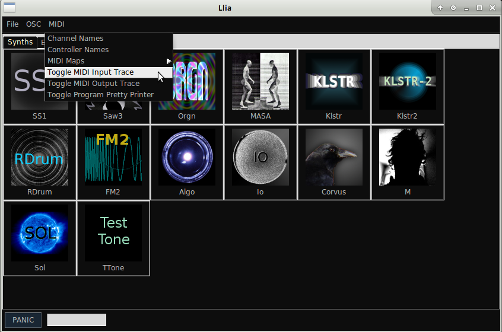

| Home | Contents | Synth Catalog | Previous: Install | Next: Quick Start 2 |
After a few seconds a splash screen like the one below should appear.
Llia is highly configurable and may be configured to skip the above splash screen, or to not load a GUI system at all. If a window appears but is not the one above, or if no window at all appears try editing the configuration file.
Under the [GUI] section make sure the following two lines appear:
gui : tk
no-splash : False
In most cases the default values for OSC ID, host, client, and port numbers should be sufficient. What we're really interested in here is the selection of a MIDI input device.
MIDI output ports are included for future use, at the moment they are ignored.
The splash screen is replaced with the main Llia window. The exact appearance may differ from this image.
The "Ping" option under the OSC menu is for testing OSC communication. Clicking Ping transmits a message to the Server which in turn responds back to the client. When the client receives this response the status line displays "Ping OK". The SuperCollider post window will also indicate that a Ping message has been received.
There is a subtle bug which at times prevents the client from detecting the ping response. None the less Llia may otherwise continue to work properly.
Test MIDI reception by clicking "Toggle MIDI Input Trace" under the MIDI menu. With trace enabled diagnostic messages appear in response to incoming MIDI messages. The trace output appears in the terminal window used to launch Llia.
| Home | Contents | Synth Catalog | Previous: Install | Next: Quick Start 2 |